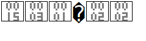

The LoRaServer was introduced to us by Brendan Kelly, a member of the IoT Dunedin Project. He had briefly investigated different solutions to hosting a local LoRa network without relying on cloud solutions.
Writing a case study investigating an example of how the LoRaServer was implemented would help our group decide if the LoRaServer would suit our needs or not.
After giving an open invitation for interviews on the gitter page for loraserver. I began talking with Lederer, G. about his personal experience with the loraserver technology. His experience was used to create a case study reflecting loraserver usage with a focus on scalability of the loraserver technology. It was difficult to define an exact version of the technology because at the time of writing the loraserver was updated to version 0.15.0, and Lederer may have been using a different version as well.
Before setting up the loraserver, it was important to research as much about the loraserver itself before developing a full loraserver, so we would have a better understanding of the technology and whether it suited the Project.
The webpage https://docs.loraserver.io is the official documentation site for loraserver. It contains information about the architecture, the nodes that collect the data, and a brief summary of the role of any application that is used to access data on the network.
The first step was to confirm that we could support the requirements. Most of the instructions to set up the server required a linux distribution and shell commands, so we knew that the server would have to be deployed on a Linux machine. We chose Ubuntu because students who have taken the Linux paper in Otago Polytechnic learn using Ubuntu machines.
Because this architecture is a network of devices communicating with each other, it was important that there were no firewalls blocking certain ports between devices, and that we could assign fixed IP addresses to our devices. Fortunately the local network used for our development gave us the opportunity to use fixed addresses and there were no firewalls blocking ports between devices.
The initial attempt at creating a host for the LoRaServer was performed using an Ubuntu virtual machine and following the instructions on the official website. It was soon decided that a VM wouldn’t be suitable for testing because other people would want direct access to the server, and the VM wouldn’t be able to handle some of the port and network requirements.
A new host was setup on a physical machine. The loraserver package was installed and setup, but then we realised that two separate packages also needed to be installed, along with third party packages such as PostgreSQL and mosquito.
Once all appropriate packages were installed, we turned our focus more to the gateway rather than the server.
At some point, I decided to update the software on the server using the resgular Ubuntu commands sudo apt-get update and sudo apt-get upgrade. This caused the LoRaServer to update to the latest version and navigating to the unsecure web page (http rather than https) for the lora-app-server responded with a ‘yet-to-be identified’ image.

I uninstalled the loraserver packages and started again following the same pattern I used to install the packages on the same device earlier in the semester. After installation, the web page was still responding with the same image. I was close to reinstalling the entire operating system when I noticed in the instructions in the official LoRaServer documentation said to navigate to the secure wep page (https). This solved the issue and no reinstall was required.
When the software was updated, a new database was required for the loraserver, as well as the lora-app-server. After creating a new database with a unique roll and password for the loraserver, the loraserver was unable to start. After looking through the documentation, talking to various people on https://gitter.im/loraserver/loraserver and changing various settings, I finally uninstalled the operating system, formatted the hard drive and started from the beginning. I used the default role name for both databases and this time there were no errors.
At this point, a working example of the instructions to install all required packages for loraserver can be found here
I had previously learned how to access Linux machines using SSH in a secure fashion, and I applied the same process to the loraserver. Users require a public-private keypair to access the server remotely as well as a password when logging in. Keypairs can be obtained from the systems administrator on request.
With help from Zoe, we created a simple database backup for all related databases. Here is an example of the database dump:
sudo pg_dump –U loraserver_ns –W –h 127.0.0.1 loraserver_ns > ~/backup_loraserver